Data Access Concepts¶
At some point in the development of your application, you are going to want to store or retrieve data. This could be as simple as a key-value store for storing personal settings, or as complex as a multi-table customer relationship database. The key ingredient to all these scenarios is structured data. I say structured here deliberately. It is an important concept. Most applications you write will require data in some sort of form that your application understands.
It's very tempting to use an unstructured data source (like NoSQL). I'm a big fan of NoSQL stores since they free me up to concentrate on the mobile client without worrying about the data format. After all, you can store whatever entities you want in a NoSQL data source. However, this is really just an example of sloppy programming. Most developers that use NoSQL are storing structured data in that NoSQL store to get around the problem that you actually have to decide what data you want to store in the database. For this reason, I prefer a SQL database. It ensures that I am thinking about the data format up front. It also helps to ensure that a bad actor is not going to store data I don't expect in my store.
This isn't to say that NoSQL doesn't have its place. There are times when you need to store structured data where the data format varies between each entity that you are storing. This tends to be an outlier situation though.
Tables, Entities and Properties¶
When we talk about data, we tend to talk in terms of Tables, Entities and Properties. These have equivalents in the SQL world (tables, rows and fields). A Table is a collection of Entities that share a common format. That format is described in terms of Properties. Properties are basic types (like strings, numbers, booleans and dates).
We create a Table Controller to expose the tables to a mobile client. A Table Controller is a REST endpoint that implements an OData v3 interface. OData is a standard interface to table data that allows the client to perform CRUD (create, read, update and delete) operations on the data. In addition, it provides for a standard way for querying the data. More normally, the Table Controller is accessed through the Azure Mobile Apps Client SDK. We saw an example of this in Chapter 1 when we first introduced the mobile client.
Azure Mobile Apps also deals with tables in a manner that enables offline synchronization of the data. That means it must be opinionated about the data format. Specifically,
- There are four system properties on each entity.
- There are limitations on relationships between tables.
- Complex types need special handling.
Let's take each of these in turn. We implemented this Model within the mobile client in Chapter 1:
using TaskList.Abstractions;
namespace TaskList.Models
{
public class TodoItem : TableData
{
public string Text { get; set; }
public bool Complete { get; set; }
}
}
It's a fairly basic model class. Note the TableData base class. I often say that Azure Mobile Apps implements
an opinionated version of OData. What I mean by that is that the protocol expects certain system fields to be present
during the transfer. The TableData class is a base class that implements that specification. It looks like this:
using System;
namespace TaskList.Abstractions
{
public abstract class TableData
{
public string Id { get; set; }
public DateTimeOffset? UpdatedAt { get; set; }
public byte[] Version { get; set; }
}
}
The server side version adds another field - the Deleted boolean. This is described in the ITableData interface
that is provided with the Azure Mobile Apps Server SDK.
The Azure Mobile Apps SDK uses
DateTimeOffsetinstead ofDateTime. A DateTime object is time zone aware, and time zone definitions change over time. The DateTimeOffset does not know anything about time zones. The DateTime representation can change depending on where you are. The DateTimeOffset will never change. This makes it a better choice for these things. You will see dates stored in UTC in your database as a result of this.
Each element of the TableData (and ITableData) has a purpose, nominally to deal with situations with Offline Sync.
The Id field¶
One of the common questions is this: Can I use an auto-incrementing integer as an Id field? Let's take a look at a simple situation. You have two clients writing to the same table. It might look something like this:
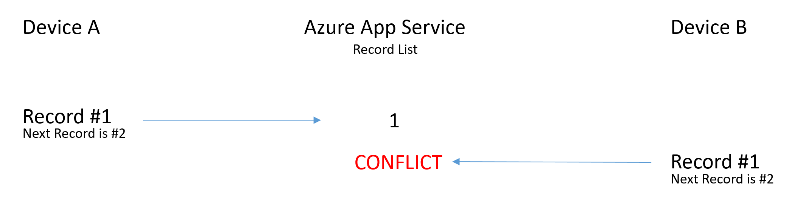
Device A inserts a new record in to the database, with ID 1. Device B is also inserting and decides to do ID 1 as well. This causes an immediate conflict that must be resolved. We could fix this by requiring that new inserts do not insert an ID. However, this can cause problems in offline cases, where you may be inserting many records and have to refer back to them during your offline state.
The compromise here is to use a globally unique ID. The GUID is a well-known algorithm and easily generated in offline scenarios. This is stored as a string during transfer.
The UpdatedAt field¶
One of the concepts that is always top of mind is ensuring that we are a good mobile citizen. This means that we care about bandwidth utilization. Reducing transfer size is good for your users. They use less of their data allowance and save time by transferring less. One of the key components to reduce bandwidth utilization is Incremental Sync. With each record, we record the date it was last updated. This is generally done for us as a database trigger, so we never have to worry about setting this value. When we synchronize our table, only the records that have been updated since the last synchronization are requested.
The Version field¶
The version field is all about conflict detection. Let's take two devices requesting the same table again:
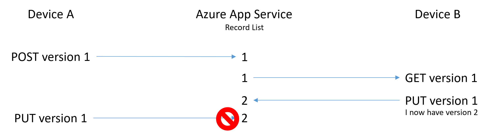
In this diagram, Device A submits the first version of the entity. Device B then updates the entity and posts it back. This is accepted because Device B is sending the same version, so the server knows that this is an update to the latest version. The server will send back a response with the updated version so that Device B knows that it has the latest version.
Later on, Device A sends an update to the same entity. It, however, still has version 1 of the entity. The server will reject that because of a version mismatch.
The Deleted field¶
When you are operating a service with an offline scope, you can't just delete entities. If an entity is deleted on Device A, it is then removed from the server. The server does not know to send an update to that entity to Device B because it no longer exists. For this reason, we never delete entities. We use Soft Delete. Soft Delete is a feature whereby entities are marked as deleted by setting the Deleted flag to true. When you query the server, the deleted records are not shown unless you explicitly ask for them. This is done as part of the offline sync process.
The Data Access Protocol¶
Given any particular table, there are a few endpoints that are important. Given our TodoItem table from Chapter 1:
| Operation | Endpoint | Description | | GET | /tables/todoitem | Query the table | | GET | /tables/todoitem/id | Retrieve a single entity | | POST | /tables/todoitem | Add a new entity | | PATCH | /tables/todoitem/id | Update an existing entity | | DELETE | /tables/todoitem/id | Deletes an existing entity | | POST | /tables/todoitem/id | Undelete a previously deleted entity |
We can take a look at each of these in turn with the Azure App Service. These can be done with Postman easily.
The first request to a new Azure App Service will take some time, especially if the site has to set up the database.
Let's start with a basic Query operation:
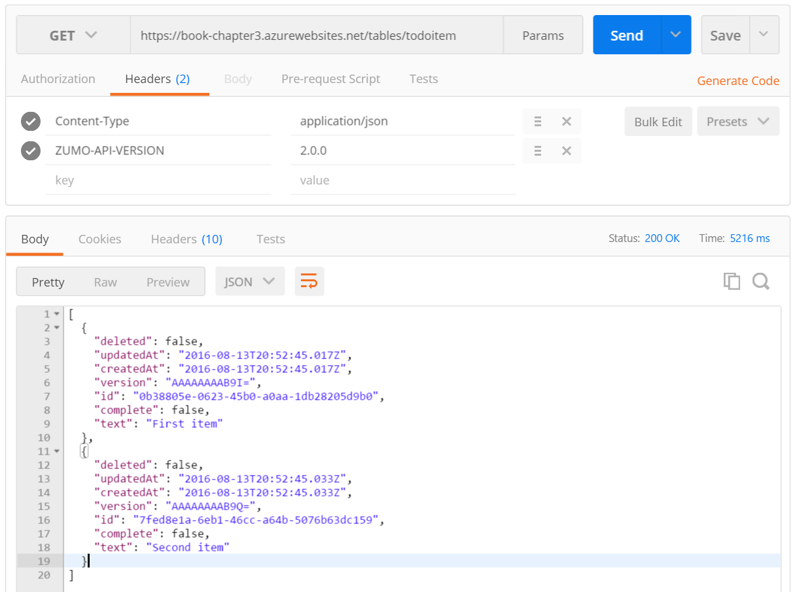
We always get an array of elements back. These contain five system properties. We didn't mention createdAt
earlier - it's optional and will be maintained for you if you don't use it. In addition, we have the fields
that were in our model. If there are no elements in a table, we get an empty array. If the table does not
exist, we will get a 404 Not Found error.
Any operation can also return a
401 Unauthorizedif you are not allowed to do the operation with the current authentication,400 Bad Requestif you supplied bad data and500 Internal Server Errorif the server crashed.
We can also do a GET for an Id:
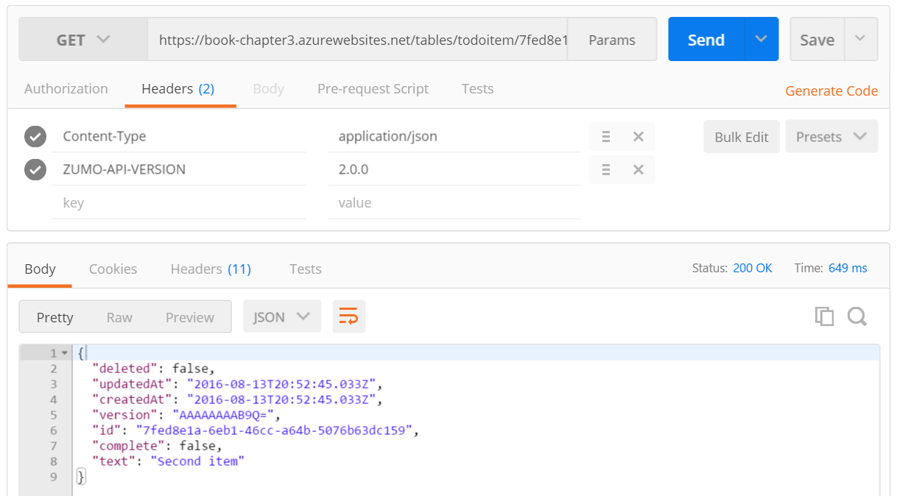
The return is the entity serialized as an object. If the Id does not exist, then a 404 Not Found is
returned.
Adding an item requires a POST:
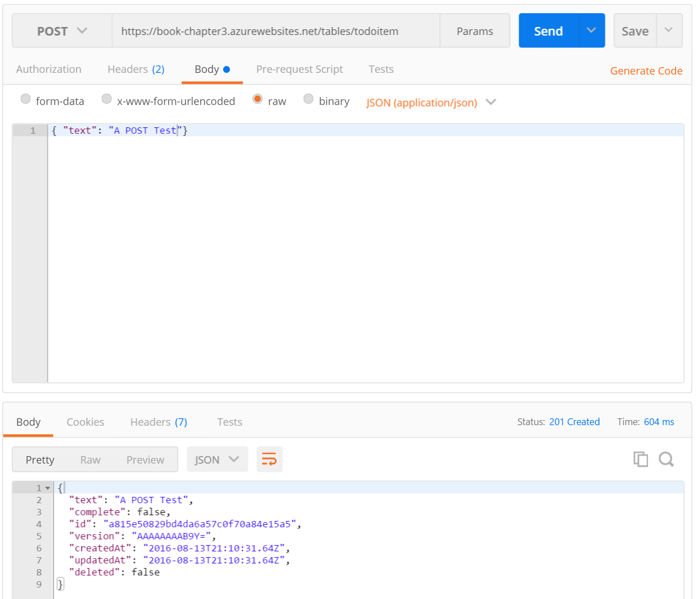
Note that you do not need to provide all the fields. In particular, the system fields will be automatically
filled in for you. Any fields with a default value will be similarly auto-created. It is fairly easy to
generate a 400 Bad Request when updating or inserting data. For example, if you submit a string when a number
is expected or submit a malformed date, you can expect a 400 Bad Request. On success, the response has a
Location field in the headers:
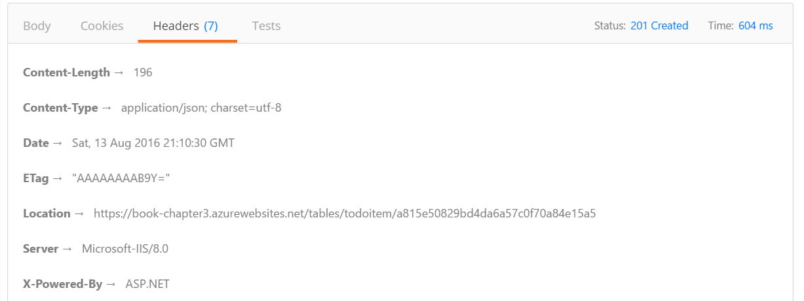
This is the URI of the entity. You can do a GET on this location to get the entity again. Updating an entity involves sending the updated fields to the Id endpoint with the changed properties:
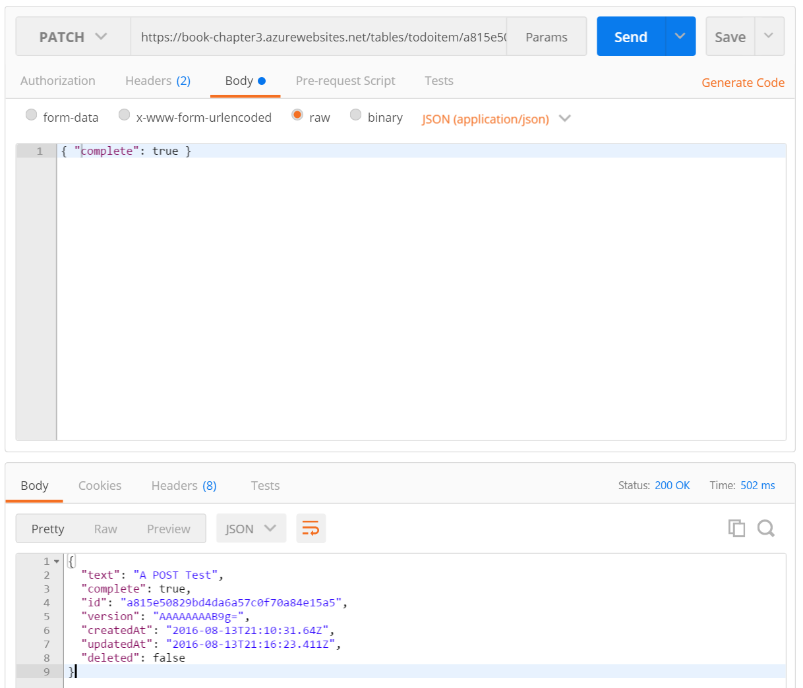
Note that you do not need to send the entire entity - just the properties that are changed. The new entity is
returned on success. As with the insert operation, data format errors will result in a 400 Bad Request. Note,
however, that if you do not submit a version field, no conflict handling is done and the server just accepts
the record. We can fix this with server code later on by requiring a version field on updates.
Deletion is fairly straight forward. The main different is that it returns a 204 No Content.
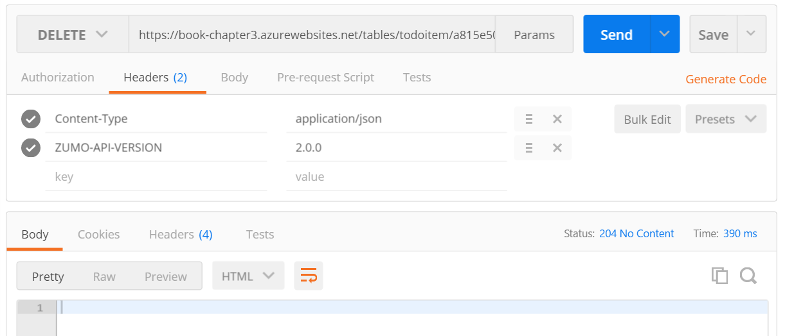
The table controller does not support soft delete out of the box. If you have followed the sequence, the record we just deleted is gone. You can verify this using a SQL Browser. To enable soft delete, you need to adjust the domain manager in the TodoItemController:
protected override void Initialize(HttpControllerContext controllerContext)
{
base.Initialize(controllerContext);
MobileServiceContext context = new MobileServiceContext();
DomainManager = new EntityDomainManager<TodoItem>(context, Request, enableSoftDelete: true);
}
Adding the enableSoftDelete parameter and setting it to true will enable the appropriate logic in the
domain manager.
We haven't introduced the Domain Manager yet. Azure Mobile Apps doesn't really care what sort of data store you are using on the backend. It proxies all requests through a class that implements the
IDomainManagerinterface. Azure Mobile Apps Server SDK supplies one such domain manager - theEntityDomainManageruses Entity Framework underneath for this purpose.
Go through the same process of adding and deleting an entity. You can see the entity by using the SQL Server Object Explorer in Visual Studio:
- Go to Server Explorer.
- Expand Azure and SQL Databases.
- Select your database, then right-click and select Open in SQL Server Object Explorer.
- You will be prompted for your username and password. Enter them, then click OK.
- You may be prompted to update the firewall for SQL access. Select My Client IP, then OK.
- Expand your database node, then Tables.
- Right-click on dbo.TodoItems and select View Data.
I find the SQL Server Object Explorer to be relatively slow when it comes to database options. However, it doesn't require any additional installs. You can also use SQL Server Management Studio if you have it installed. You will need to update the firewall for access (something the SQL Server Object Explorer will do for you).
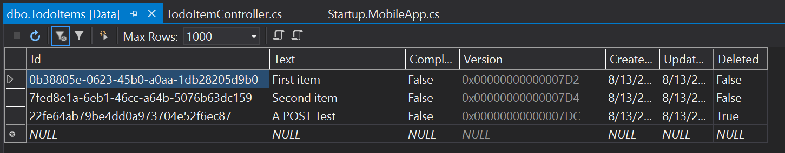
Note the third record has the Deleted column set to true. We will not see that record when we do a query. We can
see the deleted records only if we use the parameter __includeDeleted=true:
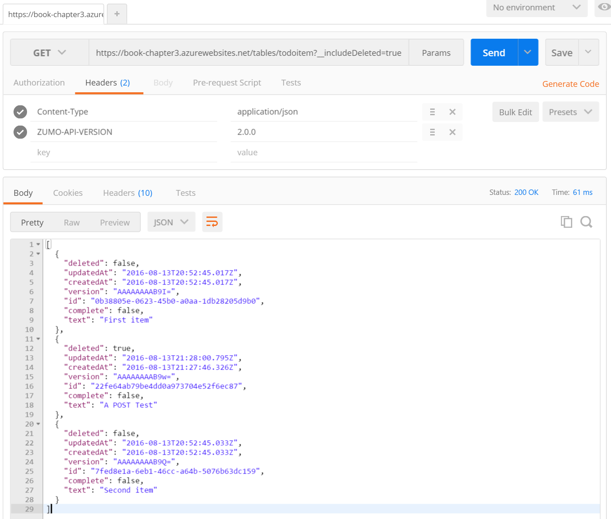
We can now undelete that record by POSTing to the Id endpoint:
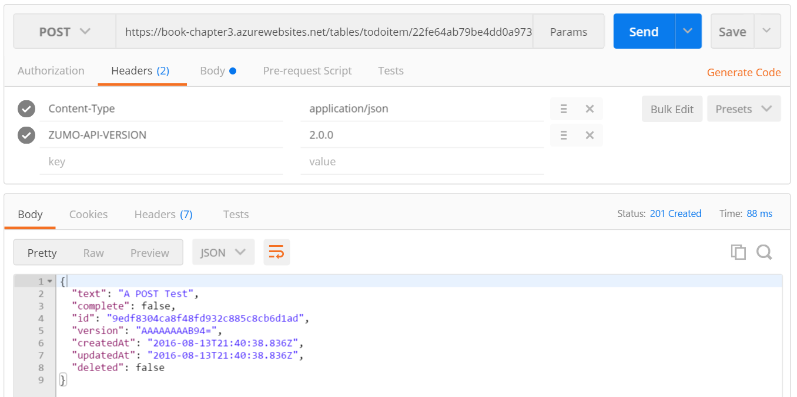
A success results in a 201 Created response, with a failure resulting in a 404 Not Found response (assuming the
failure is because the Id does not exist in the table).
Filtering Data¶
If you have followed along, we have three entities in our table now. We can do searches by utilizing the OData
$filter operator as a query:
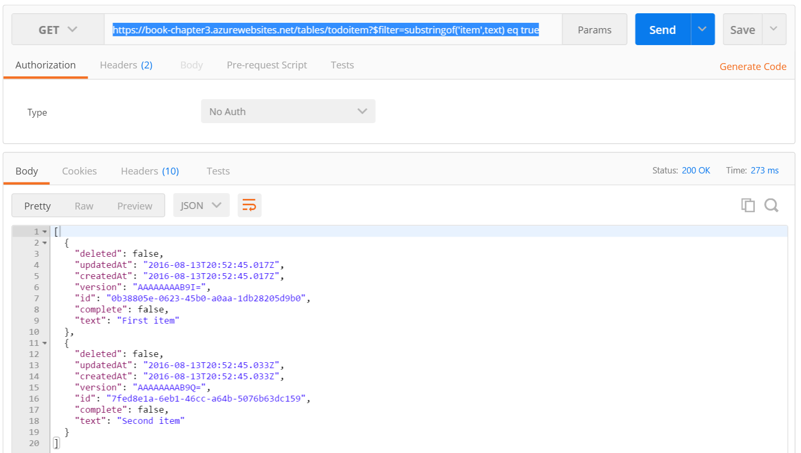
The $filter parameter takes an OData filter and returns the list of entities that match the search. The Azure
Mobile Apps SDK supports quite a bit of the OData v3 specification that is supported by the Microsoft.Data.OData
package, but not everything. There are features of the OData package that are explicitly disabled because they
do not work in an offline context. OData was defined as a method of transferring data between client and server
in an online context so we can expect some things to work differently.
We can also select specific fields by using the $select clause:
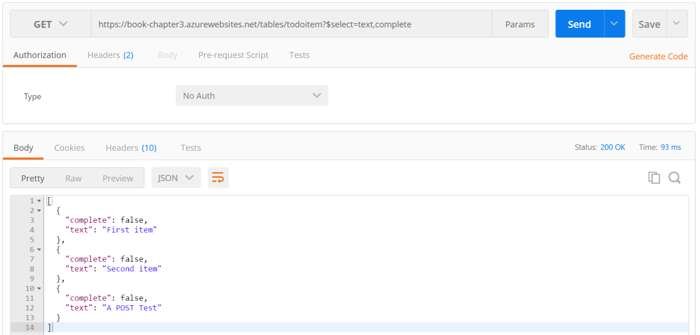
Paging Results¶
At some point, we are going to bump into an in-built limit of the server. You can clearly see this by inserting
a lot of entities then querying the results. Once the number of entities gets above 50, paging will occur. You
can adjust the paging size on the server by adding an [EnableQuery()] attribute to the class. For example, the
following will set the page size at 10:
namespace Chapter3.Controllers
{
[EnableQuery(PageSize=10)]
public class TodoItemController : TableController<TodoItem>
{
You cannot make the page size infinite, so you should always implement paging controls in your mobile client.
We can always receive the number of records that would have been sent if paging had not been in place by including
$inlinecount=allpages with the query. The query response turns into an object with two properties - the results
property contains the array of results. This is the same response as we received before. There is now another
property called count that contains the count of the records:
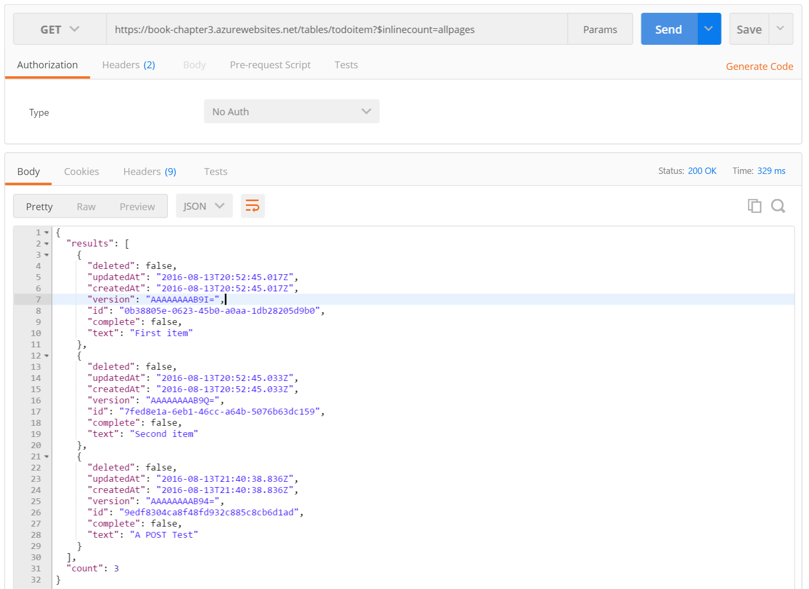
We can implement paging by using $top and $skip parameters. The $top parameter tells the server how many
entities you want to return. The $skip parameter tells the server how many entities to skip before it starts
counting.
For example, let's say you wanted to receive individual entities. You could request:
/tables/todoitem?$top=1&$skip=0/tables/todoitem?$top=1&$skip=1/tables/todoitem?$top=1&$skip=2/tables/todoitem?$top=1&$skip=3
At this point, no entities would be returned and you would know you are at the end.
Although it is tempting to suggest removing the limit on the number of entities that can be returned (so you can receive all entities in one shot), it's better to implement paging. The Azure App Service will run in a smaller App Service Plan because it won't require as much memory. You will be able to support more users and your code will be more resilient to network issues that occur during transmission.
Offline synchronization¶
One of the many reasons that developers choose the Azure Mobile Apps SDK is that it natively supports offline sync. Offline sync provides a number of benefits. It improves app responsiveness by caching server data locally on the device. It allows the app to survive network issues including little or no connectivity, and it allows the developer to decide when to synchronize, thus allowing the deferral of large updates to when there is wifi available, for example. The Azure Mobile Apps SDKs provide incremental sync (thereby ensuring the minimal amount of mobile data is used), optimistic concurrency and conflict resolution.
To do this, Azure Mobile Apps provides a SQLite based backing store for data persistence on the mobile client. You don't have to use SQLite, but it's built in and there are very few reasons to not use it. If you are using iOS, the implementation is based on Core Data (which is itself based on SQLite).
When you perform changes to an offline table, a Sync Context is created along side the offline table. One of the elements of this sync context is an Operation Queue. This is an ordered list of Create, Update and Delete operations against the offline table. When you PUSH the Sync Context, the list of creates, updates and Deletes are sent one by one to the Azure App Service, which then executes them as if they were done online. Nothing is sent to the Azure App Service until your call to PUSH.
To retrieve entities, your mobile client will perform a PULL against a query. The query is based on the filter
that we reviewed earlier. By default, all properties of all entities are pulled down. An Implicit Push happens
if there are entities in the operation queue at the time of a pull request. If you specify a query name (which is
just a text string) to the PullAsync() method, the mobile client will do an Incremental Sync. In this case,
the latest UpdatedAt timestamp that the mobile client saw is recorded in the Sync Context (and associated with
the query name). This allows the pull operation to pick up where it left off.
The query name must be unique within a Sync Context for incremental sync to work.
The sync process implements Optimistic Concurrency. With optimistic concurrency, the mobile client assumes that
its change is valid. Conflicts are handled only on push operations. If the mobile client submits a record with
a version field that does not match the server version field, the server will return a 409 or 412 response code.
What's the difference between 409 and 412? Most of the time, you will see 412 Precondition Failed. This means the ETag of the request did not match. The ETag is a header that is equivalent to the version value. 409 Conflict occurs when you don't submit an ETag but do submit a version field in the update.
If no version field (or ETag header) is submitted, the client entity is used for the create or update irrespective of the value on the server.